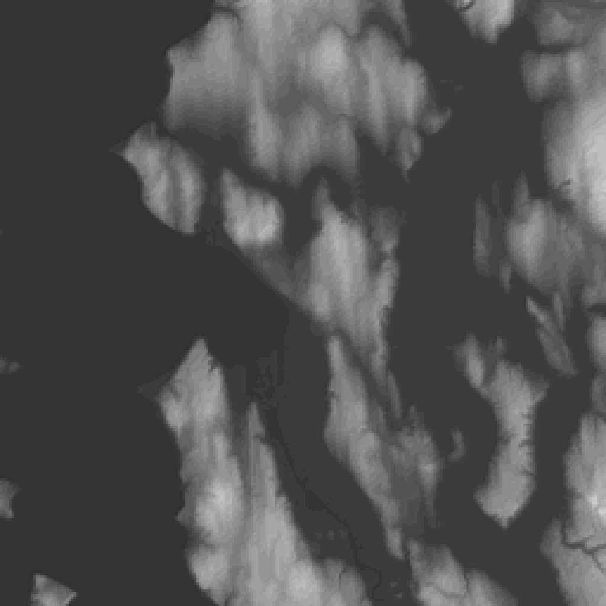
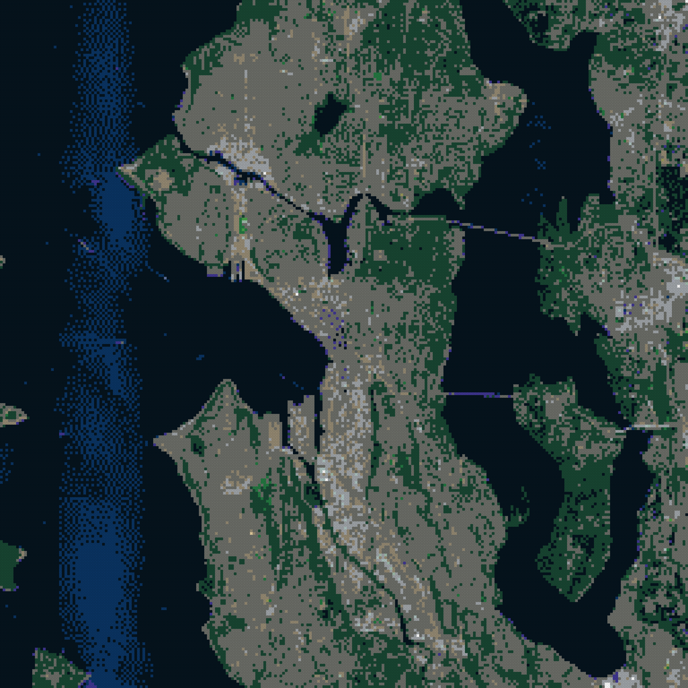
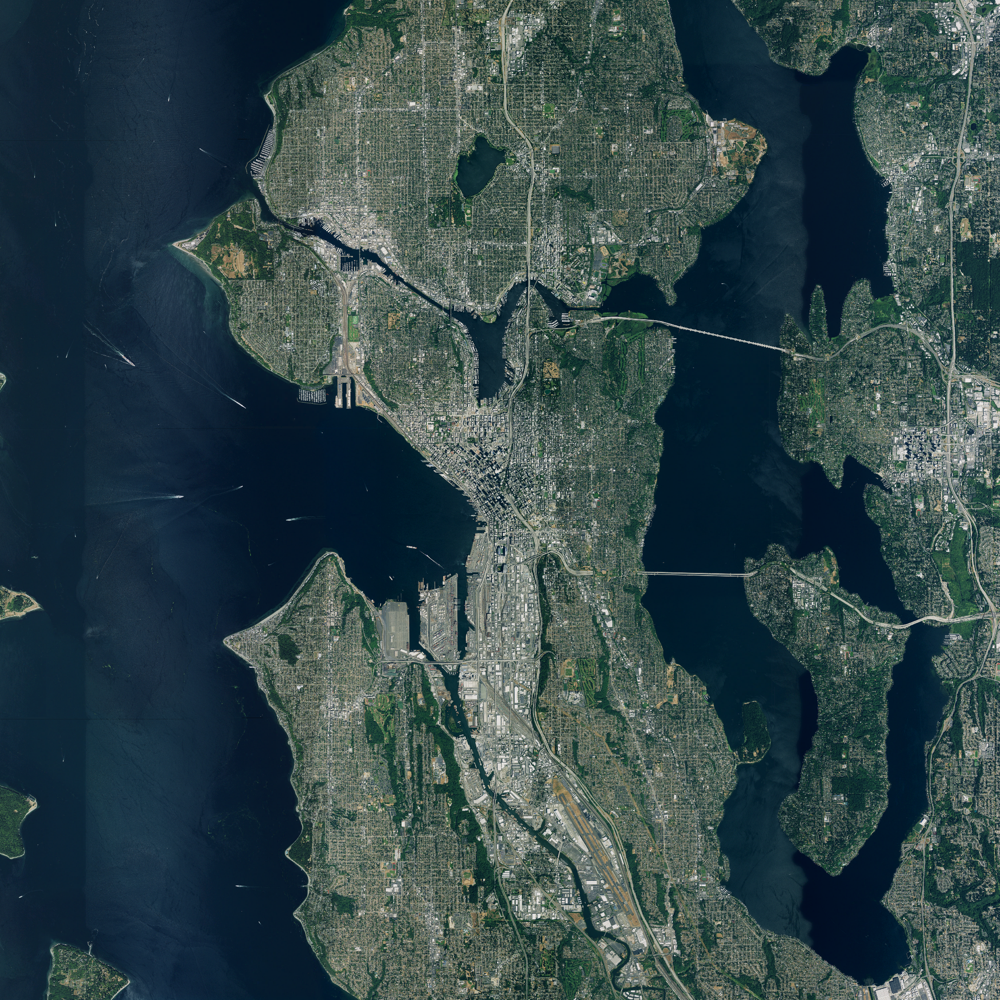

run seattle-20261001T191413 · generator 0.1.0+3c1a604-dirty · catalog lego-1x1-2026-10-01 · status failed
· variant
max height 19 plates = 60.8 mm · open whole-mountain 3D view



| footprint | 2048.0 × 2048.0 mm (256 × 256 studs) |
|---|---|
| geographic area | 24.00 × 24.00 km, 93.75 m per stud, EPSG:26910 |
| datum | -0.7 m (raw DEM min -1.9 m) |
| summit | 172.7 m stud-mean at stud [253, 215] (source max 176.6 m) |
| relief above datum | 173.5 m |
| meters per plate (1×) | 37.500 |
| max height x4.0 | 19 plates / 60.8 mm |
| LDraw 0 | 26220 studs |
| LDraw 72 | 20180 studs |
| LDraw 288 | 12176 studs |
| LDraw 272 | 3644 studs |
| LDraw 71 | 1452 studs |
| LDraw 28 | 1341 studs |
| LDraw 85 | 283 studs |
| LDraw 2 | 141 studs |
| LDraw 323 | 53 studs |
| LDraw 378 | 16 studs |
| LDraw 15 | 13 studs |
| LDraw 330 | 7 studs |
| LDraw 10 | 6 studs |
| LDraw 379 | 2 studs |
| LDraw 19 | 1 studs |
| LDraw 80 | 1 studs |
| role | provider / dataset | date | license · attribution |
|---|---|---|---|
| elevation | USGS 3DEP 3DEPElevation (Bare Earth DEM Dynamic) | None | Public domain USGS 3D Elevation Program (3DEP) |
| imagery | USGS The National Map USGSNAIPPlus (NAIP, latest mosaic) | 2023-10-07 | Public domain USDA FSA NAIP via USGS The National Map |
| PASS | coverage_complete | non-finite DEM px: 0; non-finite imagery px: 0 |
| PASS | dem_imagery_aligned | 2 grids share bounds EPSG:26910; max extent mismatch 0.000 m |
| PASS | every_stud_has_elevation | 65536 studs |
| PASS | every_stud_has_allowed_color | all colors in catalog |
| PASS | no_terrain_below_datum | min plates per exaggeration: {'x4.0': 0} |
| PASS | quant_error_within_half_plate | max |error| plates: {'x4.0': 0.5} |
| PASS | catalog_colors_currently_produced | 16 colors used; not currently produced: [] |
| PASS | terrain_colors_plate_buildable | every used color is produced as a 1x1 plate |
| FAIL | summit_position | DEM max in stud (249, 211); highest stud (253, 215); offset 4 stud(s) |
| PASS | exaggeration_invariance | 1 exaggerations share footprint [(256, 256)] and one color array per color setting (colors are computed independently of exaggeration) |
| PASS | viewer_written | 1 whole-mountain 3D viewer(s) |
| PASS | ldraw_valid:x4.0_naip_average_diffusion0.10 | 142290 elements checked |
| PASS | ldraw_seams:x4.0_naip_average_diffusion0.10 | module files together equal the full model |
{
"schemaVersion": 1,
"runId": "seattle-20261001T191413",
"status": "failed",
"generatorVersion": "0.1.0+3c1a604-dirty",
"createdAt": "2026-10-01T19:14:17+00:00",
"preset": {
"id": "seattle",
"name": "Seattle",
"center": {
"lat": 47.6062,
"lon": -122.3321
},
"boundingBox": {
"widthKm": 24,
"heightKm": 24
},
"targetStudWidth": 256,
"moduleStudSize": 64,
"surfaceResolutionStuds": 1,
"verticalExaggeration": 4,
"datumMode": "surrounding-minimum",
"viewpoints": [
{
"name": "Kerry Park",
"bearingDeg": 321,
"elevationDeg": 10
},
{
"name": "Alki Beach",
"bearingDeg": 243,
"elevationDeg": 6
},
{
"name": "Bainbridge Ferry",
"bearingDeg": 265,
"elevationDeg": 5
},
{
"name": "Gas Works Park",
"bearingDeg": 358,
"elevationDeg": 8
}
]
},
"bounds": {
"crs": "EPSG:26910",
"minE": 538200.0,
"minN": 5260749.0,
"maxE": 562200.0,
"maxN": 5284749.0,
"metersPerStud": 93.75,
"studWidth": 256,
"studHeight": 256
},
"scale": {
"metersPerPlateTrueScale": 37.5,
"exaggerations": [
4
]
},
"datum": {
"mode": "surrounding-minimum",
"elevationM": -0.7376174926757812,
"rawDemMinM": -1.9499521255493164
},
"sources": [
{
"role": "elevation",
"provider": "USGS 3DEP",
"dataset": "3DEPElevation (Bare Earth DEM Dynamic)",
"sourceUrls": [
"https://elevation.nationalmap.gov/arcgis/rest/services/3DEPElevation/ImageServer/exportImage"
],
"itemIds": [],
"acquisitionDate": null,
"nativeResolutionM": 1.0,
"analysisGridPx": 2560,
"nativeCrs": "EPSG:26910",
"license": "Public domain",
"attribution": "USGS 3D Elevation Program (3DEP)",
"cacheKeys": [
"9889f7b90bafc3f5189693c9949289c7b51e08aa2815f44e675617193a6477bb",
"c3168a100f79222ff025675473913c7520d4ec8f75f2976849f51c6b76f4e1b9",
"7d7df61bf7c64eee592f944f9a77f595fe005e6633f1b621e21c30bb9bb3443c",
"eb7a0dff772970f7fc563ae9823efb730c30fb70f477579903e70d12e2105520",
"748c942e3348b978f866e720deb72ebedc6b2a13db7289320cec0f83582f8497",
"b28a1534e3fb547c981a62b9b8f1d05834d0db3c7f71c83ef61749daf3f4e12a",
"d0f652f1ec477375d699f47c41636afdf974f4493a72f76deed2bb968e0441ab",
"564e7129827a3a1ebb7047c3902fd3184c5dff0ffdcb411406ac42c633ee9b09",
"d97ea7242a2f26454fa03a3e5752ee230f721bc0024a2fa823dc4a633f20fef4",
"d262ac344fdaaed7ad8df0cb37a751f682fd3f28d3cdeaba9f01466d7224a403",
"d952484247dccdb7905d498cce138ae100c59f8ad30a9ff983a4a753babc8385",
"ea3ed7cef3db593d48a13b3b5cfda3168baa5ba85ad8ca5924f5963c93488b9f",
"f648dfb6b0693e566a408ef8e56317885b3c3bd9530c345b4b1a25804a858c00",
"df801481e0d999122cf6d4d49d1b2432c52b841b7e2901c3191020d1c8d84425",
"81f238981791e15329c9c6ce39491e6536f43d71a11cd3cf64528d1a379ca090",
"69cb9dbfc8ad7e0c8e483206aaff443cbf2c0ea84542b2f6c7852c424e65fb7b"
]
},
{
"role": "imagery",
"provider": "USGS The National Map",
"dataset": "USGSNAIPPlus (NAIP, latest mosaic)",
"sourceUrls": [
"https://imagery.nationalmap.gov/arcgis/rest/services/USGSNAIPPlus/ImageServer/exportImage"
],
"itemIds": [
"wa_m_4712221_ne_10_060_20231007_20240209",
"wa_m_4712221_nw_10_060_20231007_20240209",
"wa_m_4712221_se_10_060_20231007_20240209",
"wa_m_4712221_sw_10_060_20231007_20240209",
"wa_m_4712222_ne_10_060_20231007_20240209",
"wa_m_4712222_nw_10_060_20231007_20240209",
"wa_m_4712222_se_10_060_20231007_20240209",
"wa_m_4712222_sw_10_060_20231007_20240209",
"wa_m_4712223_ne_10_060_20231007_20240209",
"wa_m_4712223_nw_10_060_20231007_20240209",
"wa_m_4712223_se_10_060_20231007_20240209",
"wa_m_4712223_sw_10_060_20231007_20240209",
"wa_m_4712229_ne_10_060_20231007_20240209",
"wa_m_4712229_nw_10_060_20231007_20240209",
"wa_m_4712229_se_10_060_20231007_20240209",
"wa_m_4712229_sw_10_060_20231007_20240209",
"wa_m_4712230_ne_10_060_20231007_20240209",
"wa_m_4712230_nw_10_060_20231007_20240209",
"wa_m_4712230_se_10_060_20231007_20240209",
"wa_m_4712230_sw_10_060_20231007_20240209",
"wa_m_4712231_ne_10_060_20231007_20240209",
"wa_m_4712231_nw_10_060_20231007_20240209",
"wa_m_4712231_se_10_060_20231007_20240209",
"wa_m_4712231_sw_10_060_20231007_20240209",
"wa_m_4712237_ne_10_060_20231007_20240209",
"wa_m_4712237_nw_10_060_20231007_20240209",
"wa_m_4712238_ne_10_060_20231007_20240209",
"wa_m_4712238_nw_10_060_20231007_20240209",
"wa_m_4712239_ne_10_060_20231007_20240209",
"wa_m_4712239_nw_10_060_20231007_20240209"
],
"acquisitionDate": "2023-10-07",
"nativeResolutionM": 0.6,
"analysisGridPx": 3840,
"nativeCrs": "EPSG:26910",
"license": "Public domain",
"attribution": "USDA FSA NAIP via USGS The National Map",
"cacheKeys": [
"4f2c45e78ed7f2c21ef302d5e4eadcb2dd0c52812cf1b8774ce525f763127a27",
"1ddd14ece700d87aaa142903532702f1582a02497d8cd7b475bf93fae778a50e",
"4bf12488ae374bb6642624ebacb42ff2d717127f7538aa26a3f35e85ebfacb2e",
"64209d910dea60161b4c28a5dd4bc2547b6f1a98096b5bfa05141e5cc129bad2",
"8e80630afce096a4405c8e96328897e4b9c1d8894d7e9a9f12b36fdf61970697",
"dca84be35869120f8d5cac37a95e47f6442049e1562d361f9c55435935b6770f",
"d84954bebc17b226f0a3a582da19b6fe3afdfa41d2c4a828b6194459154cd208",
"497b72b50a7f84d7e2a3c3d2e748531da15eb46b68779273738f199f1d790946",
"d30164f39808cc264d2fa319df10ac2d82a1f3718e9ebfc9e3f9481d63ff03a4",
"47170a0c8532614956d8423dd622d309e4887f648e8239fa54c2e2a64b69ef0b",
"a125f6dccbcb6065d25ee953712aeae446acc2bbe3858c113d96f24848b72c4f",
"e290d8a2d5651aaeac4087c52349f333b6b21ff2aa45b66430a313a1b0d024fe",
"08edae0af47bd2fd114003b8c6dc2a0364b7573f1962bc1ea7cee54e4f680a6b",
"cf803ef5c05ffd56e582a25fb6898fe72f7fa24aeae6d05324a01ddce9a0af07",
"718717369a17e271d05855bac853ccb8e4c89c559383a5edb1b8892131ed2aba",
"6985230ddad2a709c42d51de4966d18dce3f54c07c6b9337d8df5e4db4ed8ccb"
],
"imageryKey": "naip",
"notes": [
"acquisition date cross-referenced from Planetary Computer NAIP STAC (30 items, 2023-10-07..2023-10-07)"
]
}
],
"catalog": {
"version": "lego-1x1-2026-10-01",
"sha256": "313a874bc2e3b9a52333454ffbe36a7d309261fd5b5deb0fcd496c8ef2922d2d",
"terrainPalette": {
"rule": "colors currently produced as 1x1 plate (3024)",
"size": 47,
"excluded": []
}
},
"variants": [
{
"key": "x4.0_naip_average_diffusion0.10",
"verticalExaggeration": 4,
"color": {
"imagerySource": "naip",
"imageryDate": null,
"sampling": "average",
"assignment": "diffusion",
"diffusionStrength": 0.1
},
"metrics": {
"maxHeightPlates": 19,
"maxHeightMm": 60.8,
"colorDistribution": {
"0": 26220,
"2": 141,
"10": 6,
"15": 13,
"19": 1,
"28": 1341,
"71": 1452,
"72": 20180,
"80": 1,
"85": 283,
"272": 3644,
"288": 12176,
"323": 53,
"330": 7,
"378": 16,
"379": 2
}
}
}
],
"summary": {
"geographicWidthM": 24000.0,
"geographicHeightM": 24000.0,
"physicalWidthMm": 2048.0,
"physicalDepthMm": 2048.0,
"summitStud": [
253,
215
],
"summitElevationM": 172.74323852539064,
"summitSourceElevationM": 176.57554626464844,
"reliefM": 173.48085601806642
},
"outputs": {
"canonical": {
"path": "canonical.npz",
"sha256": "a6212181dfb08b0e059ddba1122bce42fee7f38bcf97e6b311ed2434f031df60"
},
"preview:height-x4.0": {
"path": "previews/height-x4.0.png",
"sha256": "64e5945130ce58cb1522f87e276234fa35d0c370bb40fdce9fd45a184928e9e7"
},
"preview:color-naip_average_diffusion0.10": {
"path": "previews/color-naip_average_diffusion0.10.png",
"sha256": "86ec026dee7321842b5a0a290ec0c7fbab04c74248d571e64570a411d9ac9acb"
},
"preview:imagery-naip": {
"path": "previews/imagery-naip.png",
"sha256": "da2f30cbaefee89d535787e47e4fa16c629c013c855897fd952cb66104e457f5"
},
"viewer:x4.0_naip_average_diffusion0.10": {
"path": "viewer/x4.0_naip_average_diffusion0.10.html",
"sha256": "872d08d4ccf860dd542a3d121ada35e1ae53b191ffeebe2954a25b4c3c0ad49e"
},
"ldraw:x4.0_naip_average_diffusion0.10:Module_A1": {
"path": "ldraw/x4.0_naip_average_diffusion0.10/Module_A1.ldr",
"sha256": "328c7560844aa66cbb6aa1db9b66479dafce62b254c6efa0d7cad9fdc9671ae4"
},
"ldraw:x4.0_naip_average_diffusion0.10:Module_A2": {
"path": "ldraw/x4.0_naip_average_diffusion0.10/Module_A2.ldr",
"sha256": "3a8c0c5a941d627ccb58304efb166e49396fbc149c1581e1fab466345499d0f4"
},
"ldraw:x4.0_naip_average_diffusion0.10:Module_A3": {
"path": "ldraw/x4.0_naip_average_diffusion0.10/Module_A3.ldr",
"sha256": "b8c8d58b191760b75b47823cf50140f72afd3d7d834c25fc07536a10d1d1b85a"
},
"ldraw:x4.0_naip_average_diffusion0.10:Module_A4": {
"path": "ldraw/x4.0_naip_average_diffusion0.10/Module_A4.ldr",
"sha256": "affbada2ef6c373d4b5f64ae84b1841cf1f0ffeb638c50675f93cb608583d5cf"
},
"ldraw:x4.0_naip_average_diffusion0.10:Module_B1": {
"path": "ldraw/x4.0_naip_average_diffusion0.10/Module_B1.ldr",
"sha256": "47bd898b25238f8ccfb5ebbda72cab5d33974c78b4af3eba99e379f7407fa02f"
},
"ldraw:x4.0_naip_average_diffusion0.10:Module_B2": {
"path": "ldraw/x4.0_naip_average_diffusion0.10/Module_B2.ldr",
"sha256": "c60294b9a98ce615b96a2a3d908ca70b82017184e772529920cae629ae2de0d6"
},
"ldraw:x4.0_naip_average_diffusion0.10:Module_B3": {
"path": "ldraw/x4.0_naip_average_diffusion0.10/Module_B3.ldr",
"sha256": "5cf814508c7a0068758c752355c68d69a5238047897aca28244f3cb2646bfd09"
},
"ldraw:x4.0_naip_average_diffusion0.10:Module_B4": {
"path": "ldraw/x4.0_naip_average_diffusion0.10/Module_B4.ldr",
"sha256": "c08c2f21622ede4cdb5236561b8cc632e586e8b2f34b0a1da8fbc5cc6300efbc"
},
"ldraw:x4.0_naip_average_diffusion0.10:Module_C1": {
"path": "ldraw/x4.0_naip_average_diffusion0.10/Module_C1.ldr",
"sha256": "a7ca568e22d3229e76b55daba9ac1db76cd71242f9442fd2184f7c6e7476a17f"
},
"ldraw:x4.0_naip_average_diffusion0.10:Module_C2": {
"path": "ldraw/x4.0_naip_average_diffusion0.10/Module_C2.ldr",
"sha256": "f06767119555ff92140eb994e8b3af3303c190b850940b581f4c9d075b02e114"
},
"ldraw:x4.0_naip_average_diffusion0.10:Module_C3": {
"path": "ldraw/x4.0_naip_average_diffusion0.10/Module_C3.ldr",
"sha256": "ec8688e33d1793a0e0762cab8dc8f5b3076f915344102e4a9e87e700aef741b9"
},
"ldraw:x4.0_naip_average_diffusion0.10:Module_C4": {
"path": "ldraw/x4.0_naip_average_diffusion0.10/Module_C4.ldr",
"sha256": "d58ff7aed1afce8514cfbeb5ee4b346d5430076e5a50eb9ddef8711749d02dd3"
},
"ldraw:x4.0_naip_average_diffusion0.10:Module_D1": {
"path": "ldraw/x4.0_naip_average_diffusion0.10/Module_D1.ldr",
"sha256": "90ffacb3526c85dec6b53b1e752420a5e249619f5fa709c5aeea1754b9ac424b"
},
"ldraw:x4.0_naip_average_diffusion0.10:Module_D2": {
"path": "ldraw/x4.0_naip_average_diffusion0.10/Module_D2.ldr",
"sha256": "0794d3421559bf31213c1b04f1469a69dd58b967823b273533d7889358bf7ece"
},
"ldraw:x4.0_naip_average_diffusion0.10:Module_D3": {
"path": "ldraw/x4.0_naip_average_diffusion0.10/Module_D3.ldr",
"sha256": "7dce2249a1fb795e724a9b50c6a5fb7bdcded3e8dcf0d56aae6e01f06799b34c"
},
"ldraw:x4.0_naip_average_diffusion0.10:Module_D4": {
"path": "ldraw/x4.0_naip_average_diffusion0.10/Module_D4.ldr",
"sha256": "b72214c2173d9a1c22d5923505219deb8d34b0b85e2b6291ab254aeeca81966b"
},
"ldraw:x4.0_naip_average_diffusion0.10:full": {
"path": "ldraw/x4.0_naip_average_diffusion0.10/Seattle.mpd",
"sha256": "21a10cebe8b0c290162ca6f215a3ebc1e468f16762534823570aa5dd2f0a1175"
}
},
"validation": [
{
"check": "coverage_complete",
"passed": true,
"detail": "non-finite DEM px: 0; non-finite imagery px: 0"
},
{
"check": "dem_imagery_aligned",
"passed": true,
"detail": "2 grids share bounds EPSG:26910; max extent mismatch 0.000 m"
},
{
"check": "every_stud_has_elevation",
"passed": true,
"detail": "65536 studs"
},
{
"check": "every_stud_has_allowed_color",
"passed": true,
"detail": "all colors in catalog"
},
{
"check": "no_terrain_below_datum",
"passed": true,
"detail": "min plates per exaggeration: {'x4.0': 0}"
},
{
"check": "quant_error_within_half_plate",
"passed": true,
"detail": "max |error| plates: {'x4.0': 0.5}"
},
{
"check": "catalog_colors_currently_produced",
"passed": true,
"detail": "16 colors used; not currently produced: []"
},
{
"check": "terrain_colors_plate_buildable",
"passed": true,
"detail": "every used color is produced as a 1x1 plate"
},
{
"check": "summit_position",
"passed": false,
"detail": "DEM max in stud (249, 211); highest stud (253, 215); offset 4 stud(s)"
},
{
"check": "exaggeration_invariance",
"passed": true,
"detail": "1 exaggerations share footprint [(256, 256)] and one color array per color setting (colors are computed independently of exaggeration)"
},
{
"check": "viewer_written",
"passed": true,
"detail": "1 whole-mountain 3D viewer(s)"
},
{
"check": "ldraw_valid:x4.0_naip_average_diffusion0.10",
"passed": true,
"detail": "142290 elements checked"
},
{
"check": "ldraw_seams:x4.0_naip_average_diffusion0.10",
"passed": true,
"detail": "module files together equal the full model"
}
],
"exportMode": "both",
"ldrawCounts": {
"x4.0_naip_average_diffusion0.10": {
"Module_A1": 4115,
"Module_A2": 4149,
"Module_A3": 4105,
"Module_A4": 4235,
"Module_B1": 4421,
"Module_B2": 4465,
"Module_B3": 4400,
"Module_B4": 4582,
"Module_C1": 4454,
"Module_C2": 4381,
"Module_C3": 4437,
"Module_C4": 4576,
"Module_D1": 4619,
"Module_D2": 4583,
"Module_D3": 4689,
"Module_D4": 4934,
"Seattle": 71145
}
}
}